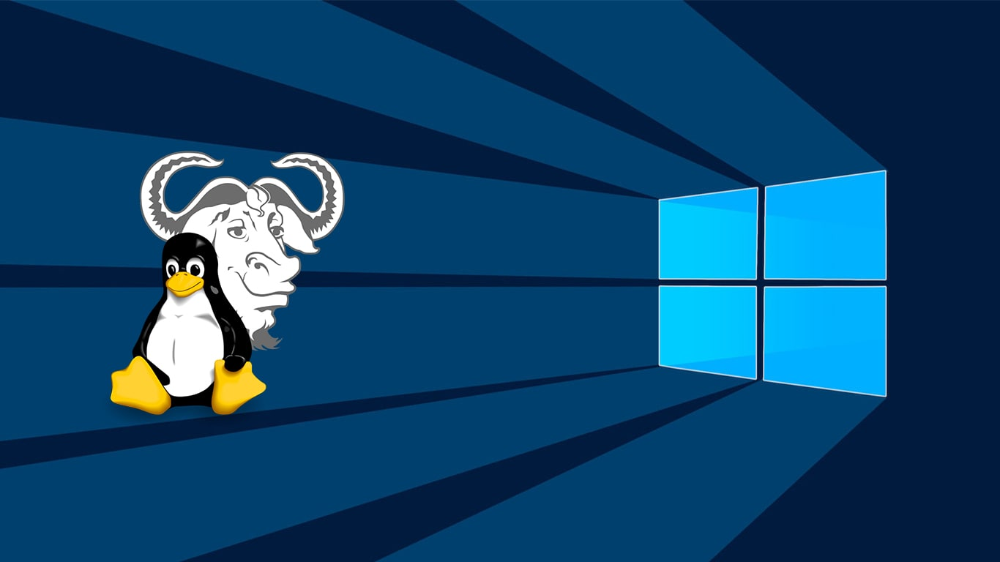

How To - Sistemas Operativos: Conceptos Básicos
쯈uieres ver Vídeos de este tema? ¡Clíca aquí!
Puedes descargar los How to clicando en los botones de abajo:
쯈uieres volver a la sección "How To" o al "Home"?
쯈uieres ver Vídeos de este tema? ¡Clíca aquí!
Puedes descargar los How to clicando en los botones de abajo:
쯈uieres volver a la sección "How To" o al "Home"?